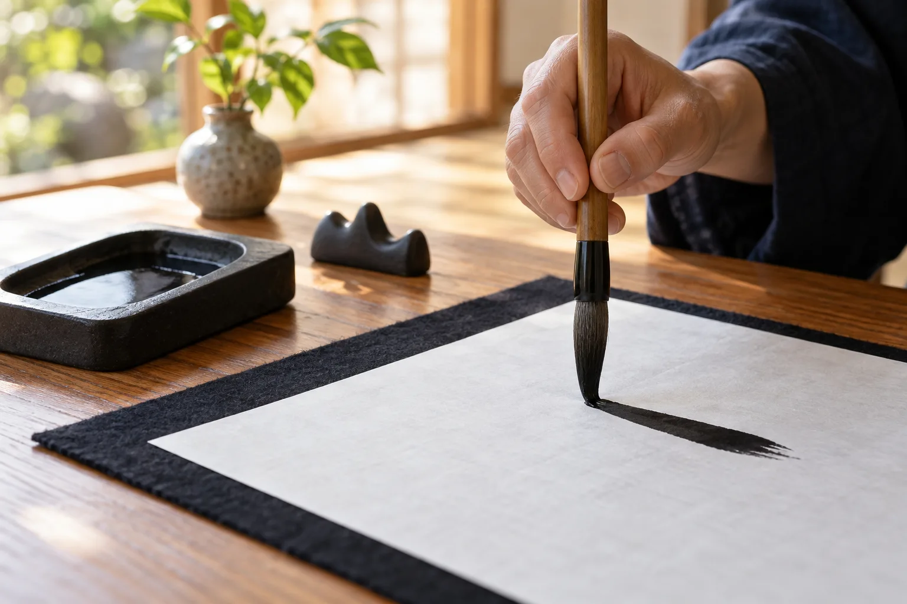

お子さまの書道
幼児からの指導を紹介しています。

非公式デザイン見本 · 画像はAI生成イメージ↓年齢や学びたいことに合わせて、相談の内容を整理できます。
幼児からの指導を紹介しています。
それぞれの目的に合わせた指導を案内。
筆と鉛筆の両方を紹介しています。
詳しい内容は、各リンク先の公式ページでご確認ください。
年齢、毛筆・硬筆のどちらを学びたいか、これまでの経験を整理してご相談ください。曜日や空き状況、体験の可否は最新の案内で確認しましょう。
Roy Labによる相談準備の提案です。
この見本には連絡・申込機能はありません。